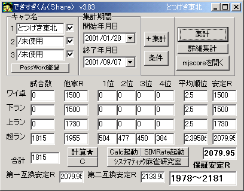

高速＆高性能★東風荘牌譜集計研究・実力計測比較ツール 実行画面例はこちら
できすぎくん v5.05 for WIN95以降 / VirtualPC(on Mac) とつげき東北

使用前に必ず利用規約にご同意ください。
できすぎくん v5.05ダウンロード 最終更新日：2010/03/19
できすぎくんトラブルシューティング
（思ったように動作しない、PC初心者で使い方がわからない、画像を掲示板に貼りたい、など全てのトラブルを解決します）
最新の主な変更とアナウンス：
v5.03 期間延長。
v5.04 内部UI調整。
v5.05 期間延長。
 本ソフトウェアの機能・特徴
本ソフトウェアの機能・特徴
・客観的な「実力」の計測（他家平均Ｒなども卓別に集計できます）
実力を示す「安定Ｒ」を計測し表示します。また、第一東風荘と第二東風荘のＲ分布の違いを埋めて正規化された安定Ｒも計算されます。
・比較可能な「強さ」の計測
自分の安定Ｒの最低値がどこか、最高値がどこかを理論的に計算します。非常に極端な成績を納めた場合にも自分の持ち得る「実力」の幅を知ることができます。
ある人の安定Ｒの最高値より、自分の安定Ｒの最低値の方が高かった場合、これを「麻雀の明確な実力差」と呼ぶことは至極妥当です。
打ち方を変えた後の安定Ｒ幅の下限が、過去の自分の安定Ｒ幅の上限を越えたなら、確実にあなたは実力がアップしたと言うことができます。
保証安定Ｒの最低値は、第一東風荘・第二東風荘を問わず、かつ試合数を問わず、実力を比較するための優れた指標です。
詳しくは「データの説明」をお読みください。
・局毎のデータ集計
局毎の和了率・リーチ率・リーチ時放銃率・・・など、様々なデータを集計し、卓別にワンタッチで切り替えて参照できます。
・高度な条件集計機能
さまざまな条件別集計を行うことによって、「出親に強いか、ラス親に強いか」とか「その卓で強い部類に入る人は、どんな打ち方なのか」とか、種々の研究を手軽に行うことができます。「ドヘタが入ると勝てない！」は本当か？ 「流れは存在する」のか？ 他家が全員Ｒ2000以上である確率は？ ・・・など、あらゆる検証・分析に、「できすぎくん」は簡単な操作で力を発揮します。
・今までになかったデータ
オーラスでのかけひき、序盤戦の結果による最終的な結果の受ける影響（東１局０本場で何点上がると何位が見込めるのか？）、リャンメン待ちの割合は、一発ツモと一発ロンはどちらがどの程度多いか・・・など、多角的な視点から様々なデータを出力します。
字牌シャンポン待ちの和了率は、リャンメン待ちの場合と比較してどのくらいだろうか、追っかけた場合ではどうか、他家のリーチが字牌待ちである確率は、など、麻雀において究極とも言えるデータを手軽に集計できます。
・非常に高速な集計
以上のように、数多くのデータを扱うにもかかわらず、「できすぎくん」の集計は非常に高速です。
特に、スコアファイルが大きい人は、既存の集計ツールなどで、「最近数十試合の結果」を集計するだけでも、非常に時間が掛かったことと思います。
「できすぎくん」は、効率的なアルゴリズムの採用、C言語をベースとした実行速度優先のプログラミングによって、集計時間を極限まで減少させることに成功しました。
以下に、他のいくつかの集計ツールとの、集計にかかる時間の比較実験結果を示します。
| 集計時間比較 |
大量の試合集計 |
最近数試合集計 |
| 「できすぎくん」v4.32 |
8.7秒 |
0.01秒 |
| 他集計ツールA |
15秒 |
3秒 |
| 他集計ツールB |
32秒 |
32秒 |
| 他集計ツールC |
35秒 |
35秒 |
| 他集計ツールD |
121秒 |
3秒 |
とつげき東北のmjscore.txt（45.6MB程度）のうちから、約6300試合を集計するのにかかった時間と、最近数試合を集計するのにかかった時間。
「できすぎくん」は起動直後の状態で「通常集計」によって集計した場合を内部時計で計測。他ツールは起動直後の状態で集計を行い、腕時計で計測したもの。
・複数のmjscoreや多数のＨＮ集計を考慮に入れたユーザインターフェイス
「＋集計機能」の採用により、複数のmjscoreや多数のＨＮを集計することが可能です。
複数のmjscoreファイルを使い分ける場合でも、ドラッグ＆ドロップ操作で簡単に集計対象ファイルを指定することができます。
・Ｒの変動や分布を高速演算でシミュレートする「SIMRate」内蔵
あと何試合で目的のＲに到達できる確率はどのくらいか？ ずっと打っていたら、どのようなＲの分布をするか？ といった疑問があります。実際に打って調べようとすると、実力が変化したり偶然性による変化分があったりで、莫大な時間がかかってしまうでしょう。また、研究内容によっては、解析的に解くことが極めて困難です。このような問題を、「できすぎくん」は、モンテカルロシミュレーションの手法を用いた「Ｒ変動シミュレータ」を内蔵することで解決しました。ある実力の人が、その実力のままに何十万試合も打った場合のＲの変動や到達Ｒ、目標達成確率など、実際に打って調べることが不可能なあらゆるデータを、ほんの数秒で計算できます。
目次
紹介・一般的な使い方説明 このマニュアルです。
データの説明 できすぎくんが出力する数多くのデータについて、見方や意味を説明しています。
条件ボタン、集計・環境オプションの説明 できすぎくんで集計の際に指定できる様々な「条件」とオプションについて技術的に説明しています。
SIMRateの説明 「できすぎくん」に内蔵されているＲ変動シミュレータ「SIMRate」の使用法を説明しています。
他機能の説明 「Calc」や「ｼｽﾃﾏﾃｨｯｸ麻雀研究室」「サンマ集計機能」の使用法、その他の追加的な情報について説明しています。
紹介
東風荘には「Ｒａｔｅ（Ｒと略される）」という実力評価の指標があります。
東風で始めにキャラを作ったときのＲは1500。
試合が終わったとき、順位や試合数、他家と自分のＲによって、これが増えたり減ったりします。
Ｒについての詳しい話は省略しますが、「Ｒ＝実力」と思われていることが多いと思います。
しかし、Ｒというものは意外に短期間の好・不調だけで変化してしまうものです。
これまでずっと、2000試合の間1700だったのに、最近100戦で負けまくった、とすると、彼の見かけのＲは1600などに下がってしまいます。
こういう場合、見かけのＲから実力を決めるのは正しい方法ではありません。
特に1000試合に満たない間にどんどん新キャラを作ってしまうような人の「実力」は、なかなか判別しにくいと思います（400試合に到達するまではＲの変動幅が大きく、その影響はおよそ1000試合まで続きます。1000試合を越えてからＲは「安定」します）。
そこで「それまでの結果と同じ結果が今後も出続けた場合（≒それまでと同じ打ち方を続けた場合）」に収束していくような理論上のＲを「安定Ｒ」と呼び、これを「実力」として計ろう、というのがこのツールです。
あなたが東風荘で打ったmjscoreの記録を読み込んで、あなたの「実力」を判定してくれます。
全ての使用ＨＮを用いてここで計算される「実力」は、卓や相手の強さに対する依存度が小さく、理論的に計算し得る「東風での麻雀の強さ」の、最も信頼できる指標の一つです。
「Ｒ〜〜のキャラを持っている」とか、何試合でＲがどこまで行ったとか、何キャラ作ってもこのあたりのＲになるとか、そういったものとは比較にならない信頼度を持ちます。
打ち方を変えたときに本当に強くなっているのかとか、そういった判断のために非常に有効な指標となります。
ただし一般に、試合数が400以上でないと、安定Ｒはあまりあてになりません。400試合以上であっても、「たまたまついていた400試合」などを取り出していては、安定Ｒでは実力が正確に測れないでしょう。他人との成績比較をする場合に、これまではどうしても「ついていた部分」の安定Ｒを申告するという状況が生まれていました。これでは実力の比較ができません。
そこでv3.83以降（フリー版はv3.128以降）では、研究成果を生かして、保証安定Ｒを出力するようになりました。特別に好調または不調だったデータ、少ない試合数のデータからでも、自分の安定Ｒの最低値や最高値を知ることができます。保証安定Ｒは綿密なシミュレーションと考察を基に計算されており、非常に信頼度の高い指標です。
保証安定Ｒの最低値を用いれば、異なる試合数や少ない試合数（例えばたった50試合でも可）での成績比較ができます。この指標は第一のＲ分布に互換されていますので、試合数の違うデータ、試合数の少ないデータ、第一のデータ、第二のデータ、第一と第二の混在データ、これら全てを乗り越えて一つの指標で「実力」を比較することが可能になりました。打ち方を変えた後の安定Ｒ幅の下限が、過去の自分の安定Ｒ幅の上限を越えたなら、確実にあなたは実力がアップしたと言うことができます。
以上はこのツールの目玉機能の一つである「麻雀実力計測」です。
さらにこのツールでは、詳細な局ごとのデータを計測できます。
和了率はどれくらいか？ どれくらいピンフで上がってるの？ 何順目くらいにリーチしてるの？ リーチした後の放銃率は？ リーチのうち良い待ちは何割か？
など、実戦麻雀からは得られない様々なデータを、コンピュータの演算性能を活かしてデータにしてくれます。
うまい人のデータと見比べれば、強い打ち方に変えていくこともできるでしょう。
※Ｒが分布する様子やその確率、偶然性による成績のばらつきと比較方法等についての詳細な考察はとつげき東北のＨＰにて行っています。
簡単な使い方
初めて起動した場合、下のような画面がでます(現在のバージョンと若干異なることもあります)。

「キャラ名」の欄に、自分の東風荘でのＨＮを入力して、取りあえず「集計ボタン」を押してみましょう（「＋集計ボタン」と間違えないようにね）。
通常はそれで集計できます。
（もし、mjscoreファイルが通常の場所にない場合は、これでは集計できませんので「mjscoreを開くボタン」で、集計したいmjscoreファイルの場所を指定してください。mjscoreファイルを上の画面上に直接ドラッグドロップして指定することもできます）
これまでの全てのワイワイ卓・ランキング卓・上級ランキング卓・超上級ランキング卓での試合数と、その時の相手のＲの平均値、自分の平均順位が出ます。
右に出る「安定Ｒ」というのが、その卓でそれまでと全く同じ結果を出し続けた場合に収束するようなＲの値です。
第一互換安定Ｒとは、その結果を平均的に記録できる実力の人が第一東風荘だけで打った場合の安定Ｒを、第二互換安定Ｒとは同じく第二東風荘だけで打った場合の安定Ｒを示します。
安定Ｒは、その結果が今後も出続けると仮定した場合に自分が到達し維持できるＲの中心点を指しますが、例えばたった50試合の結果などでは偶然性によってばらつき、他人との比較が困難です（ついていた部分だけを集計することができる）。そこで、試合数にかかわらず、また第一か第二かにかかわらず比較できる指標として、右下の大きな欄に、全ての卓の結果から計算される保証安定Ｒが出力されます。これは、そのような成績を出すために現実的に必要な実力幅（第一互換の安定Ｒ表示）を理論的に求めたもので、集計期間の試合数や場所に依存しません。それまでにあなたが記録した最高の保証安定Ｒの最低値が、そのままあなたの（成績を比較する際の）「ポイント」だと思ってもらっていいでしょう（もちろん実際の安定Ｒはこれとは異なります。この指標はあくまでも他人や、自分の過去の成績との比較のために用いられます。自分の実力そのものを把握するためには、無作為な長期データの安定Ｒを見るべきです）。
「今月の調子はどうかな」とか「打ち方を変えてみたが、強くなったかな」というようなことを知りたい時には、集計期間を指定してやれば良いでしょう。
一度記入したキャラ名や集計期間、mjscoreファイルの位置は、このプログラムを終了する時に保存され、次の起動からはいちいち入力する必要がありません。「集計ボタン」を押すだけで良いはずです。
下についている「計算★ボタン」は、手計算用です。
「ラン卓」の欄の、平均順位のところの値を「２．０」にして、「計算★」を押してみてください。
どうですか？ 安定Ｒの値が2100に変化したはずです（ただしラン卓の他家平均Ｒが1500の場合）。
ラン卓でずっと打って、平均順位２．０位を取り続けていれば、Ｒは2100を中心に増減するという意味です（逆に解釈すれば、Ｒ2100の実力の人がラン卓でずっと打ち続ければ、平均順位は２．０位くらいに落ち着く、という意味でもあります）。
「Ｃボタン」を押すと、全データが初期値に戻ります。この時、他家平均Ｒは、その卓での平均値（実測値）に初期化されます。
右上の「×ボタン」を押せば終了します。
集計例と説明
画面はバージョンによって若干異なります
こちらは集計例です。
上ランでの安定Ｒが「2414」になっていますが、これは上ランが弱いとか、そういうことを示しているのではありません。
たった１７試合の結果ですから、「たまたま」であり、その１７試合の結果が「Ｒ2414の人が（存在したとして）上ランで打った場合に取れる平均的な結果」に等しくなっていた、ということを意味します。
一般的に、安定Ｒは200試合程度ではあまり意味を持ちません。
その程度の試合数での「安定Ｒ」は、「どの程度ついていたか」を調べたい場合に意味を持ちます（普段の実力が1800なのに、ある200試合の結果では安定2000と出たなら、その期間は「Ｒ200」に相当する分だけついていた、ということになります）。
自分の実力を測るなら、最低でも無作為な400試合以上、できれば1500試合以上のデータを用いるべきです。
たまに「麻雀なんて結局運のみだ」と聞きますが、例えば650試合程度のデータで他人と自分の「実力Ｒ」を比較する場合、それが120以上も誤差を持つ確率は５％もありません。
つまり、自分より「実力Ｒ」が120高い人と、これを１セットとして勝負すると、１０セットやって９セットは負けてしまうわけです。１０回に９回も負けておきながら「運のみだ」と言うのはちょっとわがままでしょう(笑)。
充分な試合数の下では、Ｒ100とかそういった差は、麻雀の「実力の差」と言うことができます。
もちろん、ほんの100試合とかで「自分よりＲが100高い人に勝ち越している」ということは、しばしばあることです。
麻雀というゲームの性質上、もっと長いスパンを「１つの勝負」と考える必要があります。
１試合１試合の結果は、野球で言えば「ピッチャーがバッターに１球投げる」ようなもので、それが打てたか打てなかったかでペナントレースの「勝ち負け」を決めるのはバカげています。それこそ運のみでしょう。
ただ野球も麻雀も、長い期間のそれらの積み重ねでなら、「実力」には明確に数値化できる程度の差が生じ、決して「運のみ」ではない、ということです。どんなに運が良くても、1000試合勝負して「実力1600の人」が「実力2000の人」に勝てることはあり得ません（確率をシミュレーションにて調べたところ、0.00000064％でした。同様に1000試合勝負において「実力1850の人」が「実力2050の人」に勝つ可能性は１％未満です）。
これらの理論的根拠や数式についてもとつげき東北のＨＰ「システマティック麻雀研究会」で紹介しています。

こちらは局ごとのデータの例です。
他の東風の「集計ツール」が出力するような値に加えて、様々な分析用データを出力します。
各データの説明については、添付ファイル「データの説明」をご覧下さい。

最初に「詳細集計ボタン」で集計した場合に限り、集計結果の画面から「詳細データボタン」を押すことで見ることができる、詳細データです。
リーチの待ちの良さや、追っかけリーチの成功率などを詳細に集計できます。
「リャンメン待ち」とは通常のリャンメン待ちおよび３面待ち、ノベタン待ちを指します。それ以外は「クソ待ち」です。
一般的でない３面待ち（4455667711で147待ちなど）はクソ待ちと判断される場合もありますが、長期データ内では無視できます。

こちらはさらに、集計結果の画面で「状況判断技術ボタン」を押すと出てくる画面です。
こちらも各データの説明は、添付ファイル「データの説明」に載せてあります。
v3.75以降の「記念連続記録」です。最初の画面で「保証ボタン」を押すか、集計結果の画面で「記念連続記録ボタン」を押すと見ることができます。
集計期間内の全ての対戦における最高Ｒと最低Ｒ、高Ｒの連続記録などが表示されます。
高Ｒの連続記録、および経験記録については、超ラン卓でのものだけが記録として残ります。
高Ｒ保持力の値は、Ｒ2000超で超ラン卓で試合をこなすごとに、Ｒの高さに従って増加するポイントです。加えられるポイントは、Ｒ2000からＲ25きざみで1点、2点・・・です。
また、順位の連続記録も集計されます。これは卓別に集計されていますが、全卓表示の場合、その中で最も値の高い記録が表示されます。
保証安定Ｒ記録は、これまで記録した最高の保障安定Ｒ最低値を記録し保持する画面です。
ここで「保証安定Ｒ集計ボタン」を押すことで新たにその期間内の保証安定Ｒ記録を計測します（全ての試合数の全ての組み合わせのうち最高記録を計測してくれます）。
「スコアデータをクリップボードにボタン」を押すと、とつげき東北ＨＰの「実力ランキングCGI」に投稿するための投稿データがクリップボードにコピーされます。
高度な使い方（集計方法）
・平均的なデータを知りたい
集計期間を指定してから「システマティック麻雀研究室」を開き、「４人分集計ボタン」を押して下さい。自分と他家を含めた全データが集計されます。自分のデータが混ざっていることを除いて、このデータはおよそ「他家の平均的なデータ」と見なされることができます。自分のデータを比較することで、自分がどのような特徴を持った打ち手なのかわかります。
・入力してある３つのＨＮのうち、１つずつを、ＨＮを消したり再入力したりすることなく集計したい
ＨＮの入力欄のすぐ隣にあるチェックボックスのチェックを外せば、そのＨＮを集計に加えません。
再びチェックを入れると、そのＨＮは集計対象に入ります。
・特定卓を除いて集計したい
例えば、「ワイ卓では勝ち負けを気にせず打っている」ので、「ランキング卓だけでの実力Ｒを知りたい」というような場合は、普通に集計した後に、下の集計表の「ワイ卓」の試合数のところを０にして、「計算★ボタン」を押します。そうすると、ワイ卓の分のＲは加味されず、それ以外の卓での実力Ｒが計算され、表示されます。
また、「条件」の指定で、ランキング卓だけを集計対象にすることもできます。
・４つ以上のＨＮで集計したい、複数のスコアファイルから合算集計したい
「＋集計ボタン」を押すと、前回の集計結果に追加して集計します。
ためしに、普通に集計した後、「＋集計」ボタンを押してみて下さい。
試合数がさっきの２倍になったはずです。
これは、前回集計した試合数や順位を初期化せずに、次の集計を加えたからこうなったわけです。
この機能を使えば、「ＨＮが４つ以上あるよ〜集計できない！」という人も、集計できますね。
最初、３つのＨＮで集計し、ＨＮの欄を４つ目以降のＨＮに書き換えて、「＋集計」を行えば良いわけです。
他にも、何らかの事情でmjscoreファイルを分割して保管している場合なども、同じようにして追加集計できます。
最初の集計を行った後、次のmjscoreファイルを開き、「＋集計」するだけです。
ただし注意して欲しいのは、「＋集計」は、あくまでも「ファイルから読みとった集計結果」に対してだけ有効だという点です。
手計算のために試合数を変化させたりしていても、それはデータに反映されません。注意して下さい。
高度な使い方（集計条件）

こちらはマニアックな使用法です。
「条件ボタン」を押すと出てくるウインドウで、いくつかの「集計条件」を設定できます（バージョンによって機能がなかったり、違ったりする可能性があります）。
細かな指定によって、様々な解析を行うことができます。
例えば、「特定Ｒ傾向を持つ人のデータを集計」を用いれば、ある卓の勝ち組・負け組などのデータを集計することができます。
これらの集計結果と自分のデータを比較し検討すれば、どう打てば勝てるのか、負けないのか、を知ることができるでしょう。

特定の待ちの形でのリーチをした場合の和了率を調べたりすることもできます。
各オプション項目の指定とその挙動については、「条件の説明」をご覧下さい。
高度な使い方（内蔵ツール）
「SIMRate起動ボタン」を押すと、内蔵のＲ変動シミュレータSIMRateを起動します。
使用法については「SIMRateの説明」をご覧下さい。
なお、簡単な使い方は画面に表示されるので、カンの良い人はマニュアルなしで使用できるでしょう。
高度な使い方（ｼｽﾃﾏﾃｨｯｸ麻雀研究室）

これはv3.35以降の「ｼｽﾃﾏﾃｨｯｸ麻雀研究室」です。
マニアックなデータの集計ができ、麻雀の研究に役立ちます。
今後も機能は増えていくと思います。
詳しい情報については「他機能の説明」をごらんください。
環境
できすぎくんは、Borland C++ Builder Professional
5.0で開発されました。
WINDOWS95、WINDOWSNT系の完全上位互換ＯＳで作動します。現在のところ、以下の環境での動作が確認されています。
（WINDOWS系）
WINDOWS95
WINDOWS98
WINDOWSMe
WINDOWSNT
WINDOWS2000
WINDOWSXp
（Mac系）
ＶｉｒｔｕａｌＰＣ（ＷＩＮＤＯＷＳエミュレータソフト）
対応
「ワイワイ卓【チャット中心】」での試合結果は集計できません。Ｒａｔｅの値が１として記録されており、データが狂うためです。
利用規約・ライセンス・再配布など
必ずお読み下さい
できすぎくん特有の追記：
・イカサマ行為など、客観的なデータ収集という本ソフトウェアの目的に反する行為をした人はこのソフトを利用できません。
・とつげき東北は、とつげき東北の指定したＨＮでの集計を一方的に禁止することができます（例えば多重行為プレイヤーや遅延行為プレイヤーだけでなく、過去に当該のＨＮがそのような行為を行っている場合や、とつげき東北がその人と同一人物であると判断したＨＮや、あるいはその人と交流が深く当人の「悪意ある行為」に対して何の提言もしないようなＨＮを含め、東風荘利用規約違反者とその周囲は、広く禁止の対象となる可能性があります。東風荘の運営妨害をするような人には寄り付かないことが望ましいです。ただ、別にどこかでとつげき東北の悪口を言ったとか、そういう理由で禁止にすることはないと考えていただいて結構です）。
バージョン情報
v2.0 「東風実力計算つーる」としての初公開バージョン。
v2.1 ＨＮが空白の時に起きる不具合を修正した。ある条件下で集計できないことがある不具合を修正した。
v2.2 順位の分布を表示するようにした。オブジェクトの配置を変えた。追加集計機能をつけた。
v2.3 日付指定のずれを修正した。「ワイワイ卓【チャット中心】」を集計から除外するようにした（Ｒａｔｅが１として記録されるため）。
v2.4 ツールの名称を変更した。アイコンを変更した。
分析のための高度な集計機能（「特定順位の次試合のみ集計」と「日付の第一試合のみ集計」）をつけた。
v2.5 開始時の風別集計ができるようになった。タブキーでの項目変更に適切な順番を割り当てた。その他細かく改善。
v2.6 ウインドウを複数に分けた。内部の処理ルーチンを整理した。実行コードを80386系からPentium系に変更した。
v2.61 牌譜がない場合の集計ミスを訂正した。
v2.7 和了率・放銃率・和了時得点など、試験的にいくつかのデータだけ集計できるようになった。
親・子別の局毎集計ができる条件を付けた。集計を高速に行うオプションを付けた。その他。
v2.71 「平場だけ集計」ができるようになった。特定のＨＮが入っている時に集計に誤差が出るバグを直した。その他。
v2.72 「終盤戦の集計」ができるようになった。
v2.8 「局毎の集計」が、ワンタッチで卓別に見れるようになった（激便利）。
放銃素点の計算を修正。また、ツモられ率などいくつかの項目出力を追加した。
v2.81 試合終了時平均持ち点など、いくつかの項目出力を追加した。集計画面の余分な表示を消した。
v2.82 集計ルーチンが不具合を起こした時に、その部分が牌譜のどのデータであるかを表示するようにした。
（局集計ルーチンでEAccessViolation例外を処理するようにした）
v2.83 バージョン2.82の集計ミス修正版。試験的に、親/子の集計などを、結果表示画面で切り替えられるようにした。
v2.84 先制リーチ率やリーチ後放銃率など、いくつかのデータを追加した。
v2.85 ２副露系統のデータを追加した。
v2.86 「全般的なデータ」の空欄を全てうめた。「特定順位の後の集計」で、局データの方がうまく集計されていないバグを修正。
表示するデータを少し整理した。
v2.87 焼き鳥の試合・無放銃の試合・振らず上がらずの試合などだけを集計できるオプションをつけた。
特定順位の試合だけを集計できるオプションをつけた。タンヤオに放銃率の計算ミスを訂正した。
v2.88 特定のＲ傾向を持つ人のデータを集計できるオプションをつけた。
ＷＩＮＤＯＷＳ ＮＴ系に対応するためのプログラムの変更を行った。
v2.89 リーチ平均順目など、牌譜が必要なデータにおいて、牌譜がない試合が混じっていても推定値を出力するようにした。
ＷＩＮＤＯＷＳ ＮＴ／2000／Meに正式に対応。
v2.90 集計を速くした。具体的にはmjscoreのデータ日付を動的に検索し、検索にかかる時間がＯ(ｎ)→Ｏ（log ｎ）に減少した。
v2.91 内部の関数を整理した。結果表示のフォームを整理し、各項目をRead Onlyにした。順位分布も表示した。
v2.92 細かいバグの修正をした（期間指定が特定の状況では集計ができないなど）。
v2.93 個別集計の「状況判断」機能を入れた。まずは序盤の戦績別結果を表示した。特定ＨＮでの集計エラーを改善した。
v2.94 「状況判断」の値の算出法を変えた。また点数効率の評価を入れた。
v2.95 「状況判断」の、終盤（＆オーラス）のデータを出力するようにした。「データの説明」ドキュメントを添付。
v2.96 指定ＨＮを、集計に使うか使わないかのボタンを配置した。
v2.97 アイコンを変更。各マニュアルを一新。「特定のＲ傾向を持つ人で集計」にＨＮ指定を必要としなくなった。
v2.98 Ｒ変動シミュレータ「SIMRate ver.3.00」初期バージョンをできすぎくんに組み込んだ。
v2.99 SIMRateの中断条件４の誤作動を修正。シミュレート可能なサイズを増加。SIMRateマニュアル添付。
v3.00 SIMRateの研究用操作でシミュレート可能なサイズを４倍に増加。研究用オプション追加。集計結果を初期Ｒに反映させた。
v3.01 SIMRateで、Ｒ分布表示に割合（パーセント）を出力。新キャラ・400試合以上キャラの指定ボタン追加。
最終到達Ｒの表示ミス修正。研究用動作微改善。
v3.02 できすぎくん本体からSIMRateを（メモリ確保などの点で）独立させた。
SIMRate内部でのメモリ確保を動的にし、シミュレートサイズをリソースいっぱいまで指定できるようにした。
v3.03 SIMRateにグラフ表示機能追加。
v3.04 SIMRateの致命的なバグを修正（詳細についてはSIMRateのマニュアルを参照）。
v3.05 リーチ和了率・リーチに放銃率のデータを出すようにした。ﾋﾟﾝﾌ/ﾀﾝﾔｵ和了などの計算ミス修正。
v3.06 ある特定の条件で集計すると集計エラーが出るバグを修正（頭出しのバグ・EAccessViolation）。
v3.07 SIMRateに安定Ｒ分布解析機能をつけた。
v3.08 SIMRateの一部をinline化・また式の定数項を先に計算して高速化した。
中断条件で中断時に最低到達Ｒが記録されていたのを記録されないようにした。
v3.09 集計ルーチンの一部及びSIMRateのルーチンの一部をinline化して高速化した。
不正アクセスFFFFFFFEのバグ問題をさらに改善した。
v3.10 開始日によって集計もれが発生するバグを修正した。
v3.11 高度な称号（Ｒ2100超）を追加した。
v3.12 一発和了率・一発放銃率を算出データに追加した。
（以降v4.30までシェアウェア版とフリー版を分割）
v3.13 特定の値以上/以下のＲの他家がいない試合だけを集計するオプションを追加した。
v3.14 特定の雀士との対戦だけを集計・特定の雀士の成績を集計するオプションを追加した。
v3.15 追っかけリーチに関するデータを集計する機能を追加した。
v3.16 ＨＮによって一意に定まる「鍵」がない場合に集計できないようにした。特定の雀士のデータ集計オプションを追加した。
v3.17 セキュリティーの強化（詳細は非公開）。
v3.18 鍵が保存されないことがあるバグを修正。セキュリティーの強化（詳細は非公開）。
v3.19 v3.17およびv3.18に見られたバグ修正（DateTime関係）。
v3.20 集計結果の画面をワンタッチでクリップボードにコピーするボタンをつけた。
v3.21 タイトルバー以外のドラッグでもウインドウを移動できるようにした。
v3.22 今後のバージョンアップのために内部変更（テンパイチェック関数とCheckHAIHUEX関数を作りCheckHaihu関数破棄）。
v3.23 データ処理・計算用の「Calc（試作版）」を搭載した。
v3.24 v3.22、v3.23での、追っかけリーチデータがでない・先制２副露データの異常現象の修正版。
v3.25 数値データだけが有効な入力欄に数値以外を入力できないように変更。
v3.26 リーチの待ちの形などの集計を含めた「詳細データ」も出せるテスト版（まだデータが不完全＆極端に集計が遅い）。
v3.27 「孤立牌加算法」によって詳細データ集計にかかる時間を当初の65％程度にした。
v3.28 「テンパイ形束縛法」によって詳細データ集計にかかる時間を当初の33％程度にした。
v3.29 詳細集計結果の画面に出力するデータを正確な値にした。
v3.30 詳細集計結果のウインドウに、「画面コピー」ボタンをつけた。
v3.31 内部のルーチンを整理しバージョンアップに備えた。
v3.32 「実力証明」によって実績をふまえた実力証明を行う機能をつけた（試作）。
v3.33 v3.32のバグ修正版。
v3.34 「実力証明」を「実績証明」にしてデータ変更。
v3.35 「ｼｽﾃﾏﾃｨｯｸ麻雀研究室」追加。これには「東１−０本場に生起した現象別の最終順位を集計する機能」が付属。
v3.36 「ｼｽﾃﾏﾃｨｯｸ麻雀研究室」で条件が１つ指定できなかったバグを修正。
v3.37 「ｼｽﾃﾏﾃｨｯｸ麻雀研究室」での集計バグを修正。
v3.38 ＋集計ボタンのバグを修正。「状況判断技術」の項目で、表示の不具合（親のみ等にすると表示されない現象）を修正した。
v3.39 東風戦・東南戦・・・別の集計に対応した。
v3.40 「ｼｽﾃﾏﾃｨｯｸ麻雀研究室」で平均順位だけでなく順位の分布も表示するようにた。操作性を向上した。
v3.41 「ｼｽﾃﾏﾃｨｯｸ麻雀研究室」で局の終了方法条件を増やした（「自分のツモ・ロン」「終了方法を問わない」）。
v3.42 「ｼｽﾃﾏﾃｨｯｸ麻雀研究室」で「＋研究ボタン」をつけた。
v3.43 表示・インターフェイス等の微改善。
v3.44 「ｼｽﾃﾏﾃｨｯｸ麻雀研究室」でいくつかの条件を追加した。
v3.45 「ｼｽﾃﾏﾃｨｯｸ麻雀研究室」で４人のデータを全て集計する機能をつけた。操作性の問題で「＋研究ボタン」を廃止。
v3.46 Calc電卓の機能を充実させた（我ながら便利）。
v3.47 Calc電卓のショートカットキーを増加。
v3.48 右クリックによってウインドウを最小化できるようにした。
v3.49 「ｼｽﾃﾏﾃｨｯｸ麻雀研究室」での４人分集計における局毎のデータの正しさを保証した。
v3.50 長年バグ報告をうけていた(笑)「＋集計」機能の動作をバグ修正した。これに伴いデータバージョンを変更した。
v3.51 内部ルーチン改善。
v3.52 「終盤戦の強さ」の項目で、最後の１局ではなく、東４または南４の局を基準に取るように変更した。
v3.53 「ｼｽﾃﾏﾃｨｯｸ麻雀研究室」のデータをより精密にした。事実上「大局的な判断」のほぼ全てが数理的に解析できるようになった。
v3.54 西入した場合の集計オプションを追加。「ｼｽﾃﾏﾃｨｯｸ麻雀研究室」のユーザインターフェイスを改善。
v3.55 「ｼｽﾃﾏﾃｨｯｸ麻雀研究室」の条件として「和了者・放銃者の順位」「集計者の親の残りあり/なし」を指定できるようにした。
v3.56 ＵＩの改善。マニュアル追加。
v3.57 機能制限付きで３麻対応（３麻集計については、「他機能の説明」をお読み下さい）。
v3.58 ３麻集計機能で順目の判定の集計ミスを改善。
v3.59 CodeGuardでの詳細なチェックにより安定性を上昇。
v3.60 ３麻・４麻集計機能ともに安定性を向上。
v3.61  この表示が出て止まるバグを修正した。
この表示が出て止まるバグを修正した。
なおこれは集計にとって致命的なバグなので、特別にフリー版も同等のバージョンアップを行った（v3.121）。
v3.62 リーチの詳細集計の画面を若干変更するとともに、全ての空欄を埋めた。
v3.63 リーチの詳細集計の、他家のリャンメン率・クソ待ち率の値が不正だったバグを修正。
v3.64 他家Ｒの分布・自己Ｒの分布をグラフで表示する機能をつけた。
v3.65 最上卓に限り、他家Ｒの分布と自分の安定Ｒから、「実力偏差値」を出力する機能をつけた。
v3.66 卓内偏差値の集計を廃止し、代わりに第一・第二の正規化安定Ｒを表示するようにした。
v3.67 シスマ称号を第一安定Ｒで表示するように変更。
v3.68 同着の際の安定Ｒ変化に対応した。これに伴いデータバージョンを変更した。
データの互換性のために、フリー版もv3.66〜v3.68と同じバージョンアップを行った（v3.122）。
v3.69 集計すべきデータがない場合に出る「不正な小数演算処理」のエラー表示を排除した。
同様のバージョンアップをフリー版にも行った（v3.123）。
v3.70 集計開始日・終了日を結果画面に表示。他微調整。データバージョン変更。
データの互換性のために、フリー版もv3.69と同じバージョンアップを行った（v3.124）。
v3.71 集計開始日・終了日日付を変更したときに集計結果表示が追従していなかったので修正。
同様のバージョンアップをフリー版にも行った（v3.125）。
v3.72 （非公開）
v3.73 ＨＮ等の記録ファイルを、カレントディレクトリではなくできすぎくん本体のあるディレクトリに作るように変更した。
v3.74 実績証明の項目の変化。連続トップなし記録や３・４位なし連続記録などを集計するようにした。Ｒの連続記録を単純なカウントによるよう変更した。
v3.75 詳細集計のリーチ時収入得点・放銃得点の値が不正だったのを修正した。
v3.76 記念連続記録の集計に、Ｒ2000以上経験回数などいくつかのデータを追加した。内部条件を追加。
v3.77 新しい研究成果をもとに、異なる試合数であっても成績が比較できる「雀力スコア」を導入。
v3.78 （非公開）
v3.79 新たな実力評価法の確立のためにシスマ称号を廃止した。
v3.80 「雀力スコア」を正確にし（25試合未満の場合結果を出力しない）「実力（保障安定Ｒ最低値）」とした。
データの互換性のために、フリー版もv3.80と同等のバージョンアップを行った（v3.126）。
v3.81 試合数25以下の場合にも保証安定Ｒ最低値を出力するようにした。
v3.82 集計結果出力のメインを保証第一安定Ｒ最低値にした。
フリー版もv3.81およびv3.82と同等のバージョンアップを行った（v3.127）。
v3.83 最低保障安定Ｒの計算で、１万試合超での成績にも分散を許し、保証安定Ｒの表示に変えた。
データの互換性のために、フリー版もv3.83と同等のバージョンアップを行った（v3.128）。
v3.8 4試合数150〜200の場合に０除算が発生したバグを修正。
バグフィクスなのでフリー版もv3.84と同等のバージョンアップを行った（v3.129）。
v3.85 ＵＩの微調整
v3.86 「Calc」の統計計算シートに、試合数と安定Ｒから保証安定Ｒを求め、さらに異なる試合数に安定Ｒを変換する機能をつけた。
v3.87 保証安定Ｒ最低値の、それまでの最高記録をファイルに自動保存するようにした。
v3.88 CalcのＵＩの改良。集計結果画面から起動した時に集計結果の試合数と安定Ｒが使われるようになった。
v3.89 CalcのＵＩの改良。
v3.90 未知の卓種類に対応（条件「試合情報に次の文字を含まない」を追加し、卓が特定できない試合もワイ卓と仮定して集計するようにした）。
v3.91 条件「特定雀士との対戦」を用いた場合のパフォーマンスを大幅に向上した。
v3.92 メモリアクセスの効率化その他によりパフォーマンスを向上（v3.91に比較して2150試合通常集計5％程度高速化）。
v3.93 テンパイチェックのチートイ判定ルーチン改善によりパフォーマンスを大幅に向上（v3.91に比較して2150試合詳細集計20％高速化）。
v3.94 オブジェクト生成回数を減らしてアクセスを効率化し、詳細集計のパフォーマンスを向上（v3.91に比較して2150試合詳細集計25％〜30％高速化）。
v3.95 集計中にキャンセルが可能になった。
v3.96 期間内の全ての試合の組み合わせを集計し、保証安定Ｒ最低値を自動的に計測する機能をつけた。
v3.97 保証安定Ｒ最低値の記録を、画像を使うことなく利用できるようにした。
v3.98 ＵＩの改良。
v3.99 保証安定Ｒ記録で試合期間を集計期間ではなくハイスコア記録期間で保持するようにした。
できすぎくん（シェア）v4.00〜v4.29
v4.00 とつげき東北ＨＰの実力ランキングのデータと出力データをリンクさせた。
v4.01 保証安定Ｒ記録画面でクリップボードへコピー機能をつけた。ＵＩを改善。
v4.02 （非公開）
v4.03 （非公開）
v4.04 スコアファイルがデスクトップに作られていた不具合を修正。
v4.05 v4.04のバグフィクス版。
v4.06 「試合数〜〜以下での保証安定Ｒは計算しない」オプションをつけた。
v4.07 最高保証Ｒ最低値も算出するようにした。ＨＮ等の情報が記録されないバグを修正。
v4.08 SIMRateで表示の際の0除算例外処理が生じないようにした。
v4.09 保証Ｒ集計でワイ卓を除外して客観性を高めた。
v4.10 条件に「配牌ドラ〜以上の局のみ集計」「配牌ドラが役牌の局のみ集計」のオプションをつけた。
v4.11 集計終了期間制限を延長。
v4.12 集計終了期間制限を延長。ＨＮ等記録ファイルの作成位置をできすぎくんフォルダ内に限定。
ｖ4.13 mjscoreやフォルダのドラッグ＆ドロップに対応。
v4.14 環境オプション搭載版試作。
ｖ4.15 環境オプション「全ての集計条件を無効にする」を実装。
ｖ4.16 環境オプション「集計中の中断を許可しない」を実装。
ｖ4.17 環境オプション「開始日付と終了日付が逆転したら自動的に修正して集計」を実装。
ｖ4.18 環境オプション「正しい鍵が使用されていないＨＮが１つ以上あっても警告しない」を実装。
ｖ4.19 環境オプション「起動時デフォルトmjscoreを固定する」を実装。
ｖ4.20 条件指定なしの集計のパフォーマンスをｖ4.19に対して5.3％向上（3500試合程度の場合）。
ｖ4.21 各試合の頭だしルーチンを整備して集計のパフォーマンスを同11.7％向上（過去のどのバージョンより高速な通常集計が可能）。
ｖ4.22 （非公開）
v4.23 ｖ4.20〜v4.22における、上ランがワイ卓として集計されるバグを修正。
v4.24 v4.20〜v4.22における、局条件指定（東12、親のみなど）不能な不具合を修正。
v4.25 期間延長。
v4.26 ファイル入力バッファリングを明示的に行い（64KB）、特殊な環境下において集計速度が異常に遅くなる症状を改善した。通常集計の速度2％程度上昇。
v4.28 ファイルサイズを30％程度に最適化。起動時間等が短縮された。
v4.29 ドラッグドロップ指定時にＨＮ等を読み込みなおすのをやめた。
できすぎくん（旧フリー）v4.00〜v4.25
v4.00 期間内の保証安定Ｒ最低値の最高記録を求め、とつげき東北ＨＰの実力ランキングデータを出力できるようになった。
v4.01 （非公開）
v4.02 スコアファイルがデスクトップに作られていた不具合を修正。
v4.05 v4.02のバグフィクス版。
v4.09 保証Ｒ集計でワイ卓を除外して客観性を高めた。
ｖ4.10 集計終了期間制限を延長。
v4.11 集計終了期間制限を延長。
v4.23 集計終了期間制限を延長。
v4.25 期間延長。
できすぎくんv4.30以降（フリー）
v4.30 シェア版とフリー版を統合し、無償にした。
v4.31 環境オプションの一部の動作停止（不要な動作不良報告を回避するために、あまり使われないオプションを廃止）。
v4.32 壊れたmjscore（日付データの不在）集計時の不安定性に対処。
v4.33 特殊なＨＮが存在する場合に試合検索に失敗する場合があったので修正。
v4.34 （非公開）
v4.35 サンマ集計の計算ミス修正。
ｖ4.36 サンマ集計時の素安定Ｒの表示を訂正。
v4.37 サンマモード時の手動計算安定Ｒ表示を訂正。
v4.38 （非公開）
v4.39 詳細集計の「２面待ち」の定義を自由に設定可能にした。
ｖ4.40 詳細集計の集計速度を3.5倍に高速化。
v4.41 微修正。
v4.42 「２面待ち」の定義として、リーチ順目を指定できるようにした。
v4.43 最初に出てくるメインウインドウに「縮小版」をつけた。
v4.44 ＵＩの調整。
v4.45 （非公開）
v4.46 （非公開）
v4.47 白馬氏と共同研究で、サンマの安定Ｒ変動について詳細に再検証し、安定Ｒの計算法を正確にした。
v4.48 期間延長。
v4.49 （バグありバージョン）
v4.50 Calcに、Ｒ変動計算を追加。
v4.51 期間延長。
v4.52 期間延長。
v4.53 サンマ試合のあとにヨンマ試合がある場合に安定Rが正しく出ない場合があるバグを修正。
v4.54 期間延長
v4.55 ムダにウインドウの色を変えれるようにした。
v4.56 UIの微調整。
v4.57 保証集計の一部バグ修正。
v4.58 期間延長。
v4.59 「和了した」「放銃した」次の局だけ集計する条件を追加。
v4.60 「2面以上リーチ」の局だけ集計する条件を追加。
v4.61 微細な調整。
v4.62 一発ツモチャンス、一発ツモ回数、率などのデータを詳細集計に追加。
v4.63 研究用の内部変更。
v4.64 一発に関する詳細データ集計を追加（研究用）。
v4.65 ＵＩの微調整。
v4.66 リーチ時の待ち牌個数（実際に山にある平均個数）を集計できるようにした。
v4.67 「システマティック麻雀研究室」の集計機能のバグを修正。
v4.68 内部調整等。
v4.69 牌譜によってリーチ時の待ち牌個数がおかしくなるバグを修正。
v4.70 集計誤差の改善。
v4.71 ＵＩの改良。
v4.72 スプラッシュの表示。
v4.73 「2面待ち以上の定義」に「字牌待ち含まず」を追加。ＵＩの改良。
v4.74 リーチ時に自分から見えていない待ち牌個数を集計できるようにした。
v4.75〜v4.82 機能強化用内部改良。
v4.82 リーチの待ち形や待ち牌の種類などで場合わけできるようにした。
v4.83 期間延長。
v4.84 バグ修正、リーチ時の捨て牌分布集計機能をつけた。
v4.85〜v4.89 研究用の各種変更。
v4.90 期間延長。
v4.91 印刷機能をつけた。期間延長。
v4.92 内部バージョンアップ。
v4.93 期間延長。
v4.94 上ランの廃止にともない、超ランが「上ラン」として集計されてしまうようになったのを修正（上ランは牌譜の表示通りランキング卓で集計されます）。期間延長。
v4.95 期間延長。
v4.96 期間延長。起動時にページを開くようにした。
v4.97 期間延長。
v4.98 「２面待ち」の定義変更における「字牌待ちを含まない」のバグを修正。
v4.99 局あたり全収支の誤差を修正。
v5.00 期間延長。
v5.01 v5.00で消し忘れていたテスト用ボタンを削除。
v5.02 期間延長。
v5.03 期限延長。
v5.04 内部UI調整。
v5.05 期間延長。
すぺしゃるさんくす・その他
mjman 「麻雀」の全てに対するすばらしい環境を提供していただきました。感謝しています。
★開発資金援助・牌譜データ提供・技術支援★
少年N 開発のために様々な形で協力していただきました。
シーザーの眼 データ集計に非常に深い興味を示され、できすぎくんシェア版の普及のために多大なご協力をいただきました。
とつげき関東 開発のために様々な形で協力していただきました。
魑魅魍魎 開発のために様々な形で協力していただきました。
BONY 開発のために様々な形で協力していただきました。
ＢＪ 開発のために様々な形で協力していただきました。
カルリス 開発のために様々な形で協力していただきました。
あゆ☆代表 mjscoreファイルからデータを読み出すルーチンについて技術的なアドバイスをいただきました。
また、テンパイチェックルーチンの原型版をコーディングしてくれました。
ちいといつ ご存知「雀譜」の作者様ですが。バグ情報などを詳細に報告いただきました。技術的な協力もいただいています。
ともやふ マニュアルの改善のためのきっかけとなる報告をいただきました。致命的なバグの回避法の技術的なアドバイスをいただきました。
Yuu 第二東風荘最上卓の牌譜をいただきました。おかげで機能強化を図ることができました。
イイッコ 第一超ランの公開用牌譜データをいただきました。
-赤木しげる- 第一超ランの公開用牌譜データをいただきました。
疾駆★白馬 サンマ集計の重大なバグ情報をいただきました。また開発・バグフィクスのために多大な協力をいただきました。
紅孔雀さん 開発中、バグフィクス時の愚痴を聞いてもらいました（笑）。
全てのシェアウェア版購入者 開発にあたって非常に励みになりました。ありがとうございました。
また開発用資金援助においては最新のコンパイラ代金を上回る金額を援助していただいています。ありがとうございます。
★その他★
み〜な テスターになっていただきました。
♪桜にゃん♪ バグ情報をいただきました。テスターになっていただきました。協力のための牌譜もいただきました。
ＤＲＹＭＥＮ バグ情報をいただきました。テスターになっていただきました。
うに★とろ バグ情報をいただきました。
あゆ☆毒様 多数ＨＮに対応して欲しいとの提案をいただきました。
月組☆まゆ バグ情報をいただきました。
城山雀士 バグ情報をいただきました。
ふくろ★ バグ情報をいただきました。テスターになっていただきました。
よめた バグ情報をいただきました。結果的には問題なかったですが、大きなmjscoreを動的に集計するアイデアにつながりました。
れび♪ v2.95→v2.96における機能の提案をいただきました。
由紀真紀 バグ情報をいただきました。
鳩りゅうくん 開発のために様々な形で協力していただきました。
ぎた〜 こまめにバグ報告をいただきます。
れ〜もん ＭａｃのVirtualPC上での動作確認をしていただきました。
るな バグ情報をいただきました。
神龍★獣冴 再現性の低い不正mjscoreデータ（文字化けによるもの）のバグ報告をいただきました。
東鳩 バグ情報をいただきました。
わ システムの隅をつついたバグ報告をいただきました(
▼"▼)
ワニ突撃中 何も提案しないくせに文句ばっかり言っており、しかも自分のツールにオレのルーチンを流用する気です(#´Д`)
全てのできすぎくんユーザ ご使用いただき、ありがとうございます。